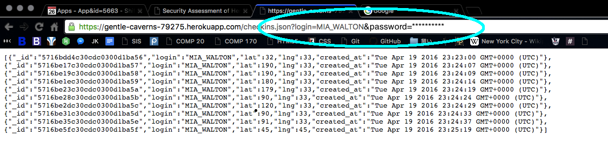
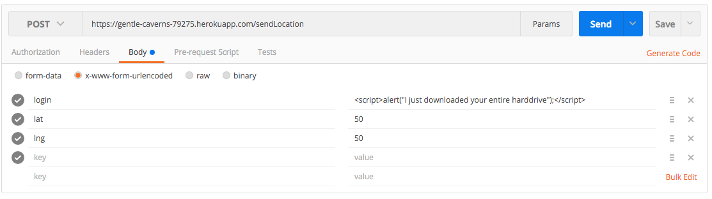
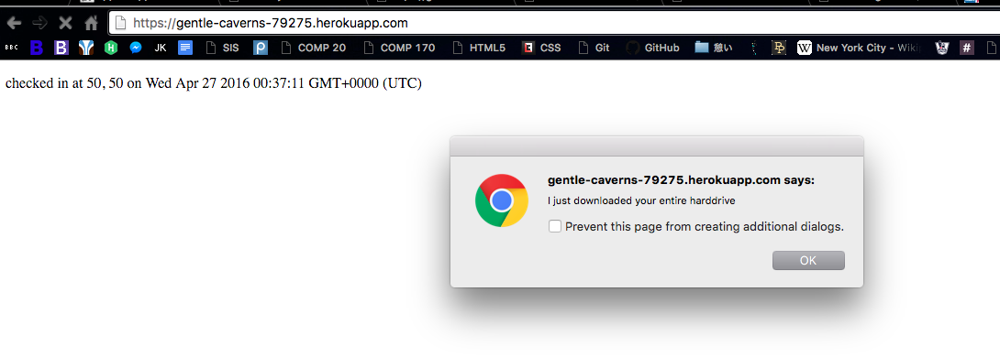

Security Assessment of Heroku Server
Joe Kamibeppu
April 19, 2016
COMP20 Spring 2016
Introduction
The objective of this assignment is to identify and resolve security issues in the client-side and server-side coursework implemented by my partner, Brendan Fahey. COMP20 assignments 2 and 3 asked students to complete client-side and server-side applications, respectively. Both assignments disregarded security or error handling, leaving much room for security and privacy vulnerabilities. My client's two products in question are outlined below.
Assignment 2 - Historic Landmarks
- Retrieve the application user's current location using the geolocation API. Calculates the closest historic landmark to the user.
- Retrieve and displays the locations of COMP20 students and nearby historic landmarks using the JSON and Google Maps API.
- Utilize the XMLHttpRequest object.
Assignment 3 - Server for Historic Landmarks
- Serve the Historic Landmarks application using Heroku, Node.js and Express.
- Provide information on recent checkins and return JSON data on past checkins.
- Utilize a MongoDB database and JSON APIs.
As a security consultant, my role is not only to challenge my client's work to expose vulnerabilities - I will also make security and privacy recommendations to improve my client's web application.
Methodology
I first performed black box testing - I attacked my client's web application without reading the source code. Using Postman, I attempted to inject unexpected user input to the web application such as image files, JavaScript, and links to other sites. Then, I viewed my partner's source code to look for potential server-side vulnerabilities.
Abstract of Findings
My partner's web application was correctly implemented, and followed the specifications of assignment 3. Since the specs did not include any privacy protection or security measures, however, I found 3 vulnerabilities in his web application. First, I found that the web application openly displays personal information on all of its users. While this may be in part because of the nature of the application, it is risky to leave so much personal information out in the open. Second, I found that the web application is susceptible to attacks based on malicious user input. Third, the web application is at risk of being flooded with user requests.
Security Issues Found
Issue 1: Personal Information Exposure
- Affects all GET and POST APIs because the issue permeates the entire website.
- Issue severity: high. User information is openly exposed and under threat. Moreover, the information is unencrypted during transport.
- The server for assignment 3 accumulates and distributes user information. While the assignment 3 specs do not outline any security requirements, it is good practice for any application to protect user information. Aside from exceptions such as login names, a user's personal information should only be available to that user.
- The application stores a user's login name, latitude and longitude. While a data leak with this information may be relatively benign, if the application developer ever chooses to add features to the site that uses more sensitive information such as bank information and SSN, data leaks could prove to be very detrimental.
- One suggestion to improve privacy and security is to prohibit users from accessing information other than their own. For example, the security for the checkins.json GET API could be tightened by requiring a password. Since users can know other users' login names, each user should add a password to their personal credentials in order to shield their personal info from other users.

Issue 2: Cross-site Scripting (XSS)
- Affects the /sendLocation POST API
- Issue severity: high. Malicious users can inject code into the web application's database, compromising the security of other users and the site itself.
- When a request through the /sendLocation API is made, validation for the lat and lng parameters is done. The values for the latitute and longitude must be between -90 and 90, or otherwise an error message is returned. However, the login parameter is not validated. Any string that is passed in as the login value is accepted, and the entire document is added to the server's database. This allows any client to inject malicious JavaScript code into the database.
- This is a case of persistent XSS, in which a malicious user inputs JavaScript code to the web application directly. Users that access the web application are then negatively affected by the code inserted by the attacker. The victim of this attack is other users of the web application, as opposed to the web application itself.
- Below is an example of malicious JavaScript injection. Using Postman, I injected a line of JavaScript that gives other users an alert box. I sent this POST request 30 times - users are forced to click through 30 popup boxes when they visit the web application.


- There are a couple of methods to avoid this problem. First, the web application can validate the login parameter. For example, the parameter could be checked to only allow a maximum length of 20 characters. Second, the application can sanitize the user input and check for invalid characters. Forcing any '<' and '>' characters to be converted to '<' and '>' will prevent user input from ever being treated as code in the future.
Issue 3: Denial-of-service vulnerability
- Affects all GET and POST APIs
- Issue severity: medium. While a successful denial-of-service attack would effectively shut down a web application, the risk of user information theft is lower compared to other security issues.
- A denial-of-service attack attempts to flood a web application with requests to the point of unusability. The attackers aim to overwhelm the web server with requests until it reaches its capacity. A distributed denial-of-service attack can occur when multiple machines and users attack a web server at once. A denial-of-service attack can also be undertaken by single user using software such as Stacheldraht.
- The web application in question is susceptible to a denial-of-service attack because its source code does not set a limit for the number of requests a user (IP address) can make in a certain period of time.
- Potential denial-of-service attacks can be discouraged by limiting the number of requests from a given machine in a certain period of time. Protecting against DDoS attacks from multiple IP addresses may prove more difficult.
- Heroku-hosted web applications can add dynos to accomodate heavier request loads. While increasing the web server's hosting capability may not prevent DoS attacks, it will help the server handle heavier traffic.
Conclusion
The Historic Landmarks server is susceptible to several privacy and security issues, including unnecessary personal information exposure, cross-site scripting, and denial-of-service attacks. These problems can be addressed using password protection, user input validation and sanitation, and limiting the number of requests from a given IP address. While preventing DDoS attacks may be difficult, the load capacity of Heroku-based web applications can be increased by purchasing additional dynos. For example, 10 additional dynos cost $400.